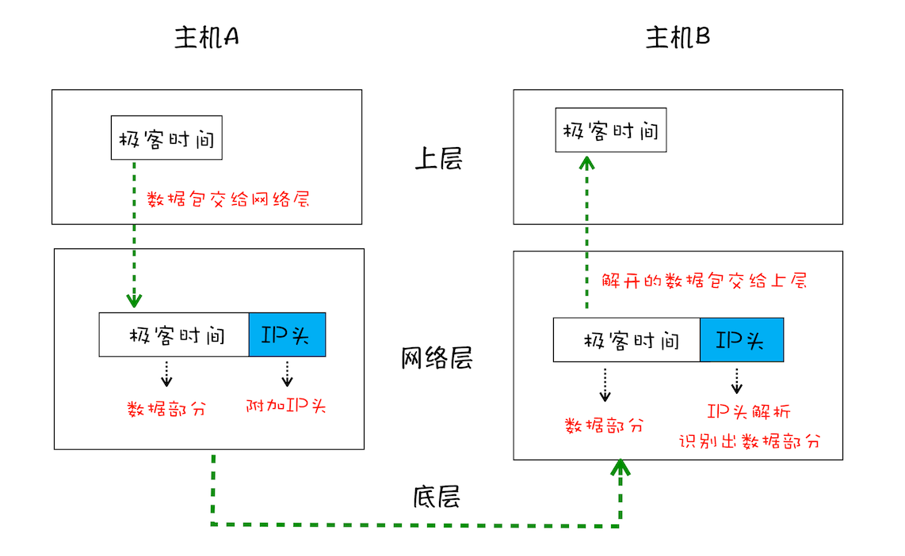
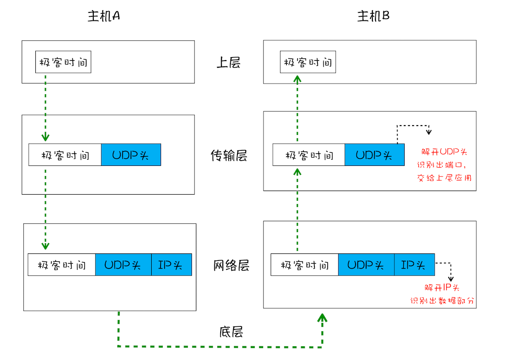
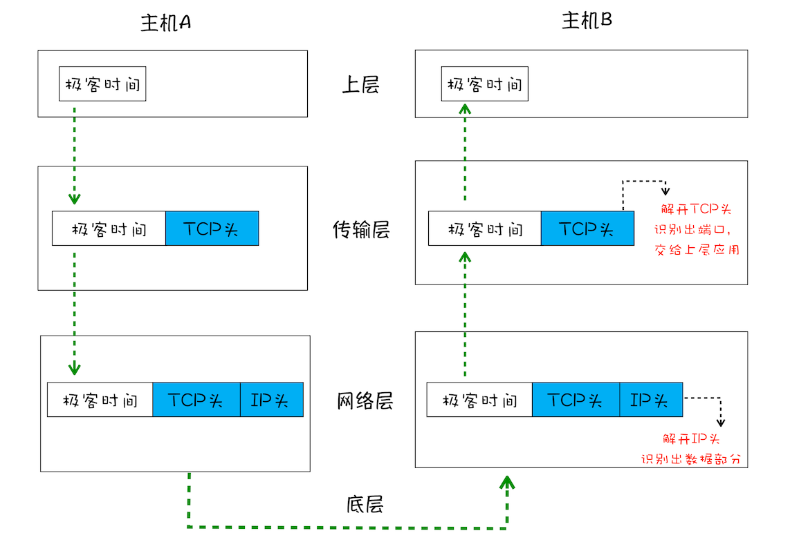
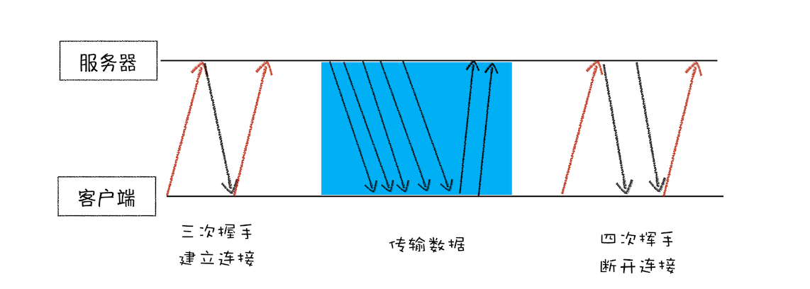

在衡量 Web 页面性能的时候有一个重要的指标叫“FP（First Paint）”，是 指从页面加载到首次开始绘制的时长。这个指标直接影响了用户的跳出率，更快的页面响应意味着更多的 PV、更高的参与度，以及更高的转化率。那什么影响 FP 指标呢？其中一个重要的因素是 网络加载速度。
要想优化 Web 页面的加载速度，你需要对网络有充分的了解。而理解网络的关键是要对网络协议有深刻的认识，不管你是使用 HTTP，还是使用 WebSocket，它们都是基于 TCP/IP 的，如果你对这些原理有足够了解，也就清楚如何去优化 Web 性能，或者能更轻松地定位 Web 问题了。此外，TCP/IP 的设计思想还有助于拓宽你的知识边界，从而在整体上提升你对项目的理解和解决问题的能力。
重点介绍在 Web 世界中的 TCP/IP 是如何工作的。
在网络中，一个文件通常会被拆分为很多数据包来进行传输，而数据包在传输的过程中又有很大概率丢失或者出错。那么如何保证页面文件能被完整地送达浏览器呢？
一个数据包的"旅程" 下面将分别从“数据包如何送达主机”“主机如何将数据包转交给应用”和“数据是如何被完整地送达应用程序”这三个角度来为你讲述数据的传输过程。
互联网，实际上是一套理念和协议组成的体系架构。 其中，协议是一套众所周知的规则和标准，如果各方都同意使用，那么它们之间的通信将变得毫无障碍。 互联网中的数据是通过数据包来传输的。如果发送的数据很大，那么该数据就会被拆分为很多小数据包来传输。比如你听的音频数据，是拆分成一个个小的数据包来传输的，并不是一个大的文件一次传输过来的。
1. IP: 把数据包送达目的主机 数据包要在互联网上进行传输，就要符合 网际协议(Internet Protocol,简称 IP) 标准。互联网上不同的在线设备都有唯一的地址，地址只是一个数字，这和大部分家庭收件地址类似，你只需要知道一个家庭的具体地址，就可以往这个地址发送包裹，这样物流系统就能把物品送到目的地。
计算机的地址就称为IP地址，访问任何网站实际上只有你的计算机向另外一台计算机请求信息。
如果要想把一个数据包从主机A发送给主机B，那么在传输之前，数据包上会被附加上主机B的IP地址信息，这样在传输过程中才能正确寻址。额外地，数据包上还会附加上主机A本身的IP地址，有了这些信息主机B才可以回复信息给主机A。这些附加的信息会被装进一个叫IP头的数据结构里。IP头是 IP 数据包开头的信息，包含 IP 版本、源 IP 地址、目标 IP 地址、生存时间等信息。
为了方便理解，我先把网络简单分为三层结构，如下图：

下面我们一起来看下一个数据包从主机A到主机B的旅程：
2. UDP: 把数据包送达应用程序
IP 是非常底层的协议，只负责把数据包传送到对方电脑，但是对方电脑并不知道把数据包交给哪个程序，是交给浏览器还是交给王者荣耀？因此，需要基于IP之上开发能和应用打交道的协议，最常见的是"用户数据包协议(User Datagram Protocol)", 简称 UDP。
UDP中一个最重要的信息是 端口号，端口号其实就是一个数字，每个想访问网络的程序都需要绑定一个端口号。通过端口号UDP就能把指定的数据包发送给指定的程序了，所以 IP通过IP地址信息把数据包发送给指定的电脑，而UDP通过端口号把数据包分发给正确地程序。 和IP头一样，端口号会被装进UDP头里面，UDP头再和原始数据包合并组成新的UDP包。UDP头中除了目的端口，还有源端口号等信息。
为了支持 UDP 协议，我把前面的三层结构扩充为四层结构，在网络层和上层之间增加了传输层，如下图所示：

下面我们一起来看下一个数据包从主机 A 旅行到主机 B 的路线：
在使用UDP发送数据时，有各种因素会导致数据包出错，虽然UDP可以校验数据是否正确，但是对于错误的数据包，UDP并不提供重发机制，只是丢弃当前的包，而且UDP在发送之后也无法知道是否能达到目的地。
虽说 UDP不能保证数据可靠性，但是传输速度却非常快, 所以UDP会应用在一些关注速度、但不那么严格要求数据完整性的领域，如在线视频、互动游戏等。
3. TCP：把数据完整地送达应用程序 对于浏览器请求，或者邮件这类要求数据传输可靠性的应用，如果使用UDP来传输会存在 两个问题：
基于这两个问题，我们引入TCP协议。TCP（Transmission Control Protocol，传输控制协议）是一种面向连接的、可靠的、基于字节流的传输层通信协议。 相对于 UDP，TCP 有下面两个特点:
和 UDP 头一样，TCP 头除了包含了目标端口和本机端口号外，还提供了用于排序的序列号，以便接收端通过序号来重排数据包。
下面看看 TCP 下的单个数据包的传输流程：

通过上图，可以了解一个数据包是如何通过TCP来传输的。TCP单个数据包的传输流程和UDP流程差不多，不同在于，通过TCP头的信息保证了一块大的数据传输的完整性。
下面我们再看下完整的 TCP 连接过程，通过这个过程你可以明白 TCP 是如何保证重传机制和数据包的排序功能的。
从下图可以看出，一个完整的 TCP 连接的生命周期包括了“建立连接”“传输数据”和“断开连接”三个阶段。

到这里你应该就明白了，TCP 为了保证数据传输的可靠性，牺牲了数据包的传输速度，因为“三次握手”和“数据包校验机制”等把传输过程中的数据包的数量提高了一倍。